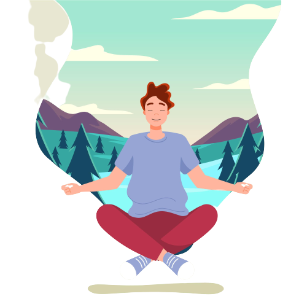
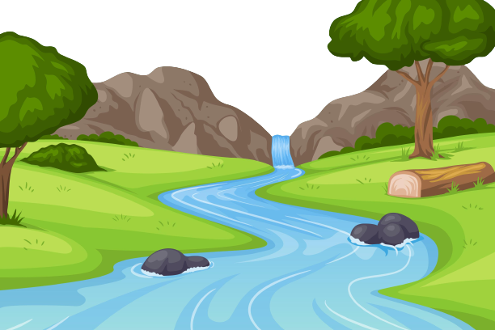
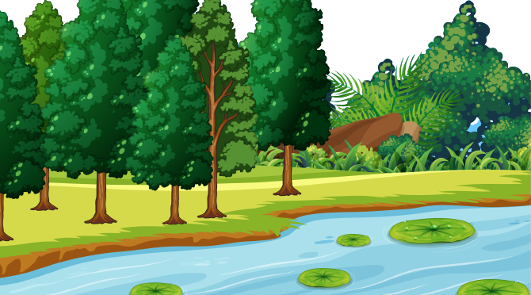
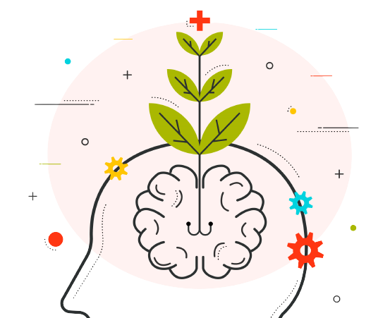

Sitting in a comfortable position, allow your shoulders to drop and relax, and plant your feet firmly on the ground. Or, if you are sitting cross-legged, feel the sense of contact between your feet and the seat and the floor beneath you.Now gently close your eyes, and for the next few breaths bring your full focus of attention to your breathing. Notice the feeling of the air flowing in through the nostrils, down into the lungs, and down into the belly as you inhale and on the exhale, feel the release of any tension as you let the air out slowly.
Leaves on a Stream Exercise
Now, imagine that you are sitting by the side of a gently flowing stream. This might be a stream that you know, or it might be something you create in your mind using your imagination. There might be a light breeze blowing as you sit here, dappled light glistening on the water, and soft green grass beneath you. imagine the stream however you like – it’s your imagination
Now imagine that there are leaves floating on the surface of the stream, and these leaves are gently flowing past you, down the stream. For the next few minutes, see if you can take every thought that pops into your head and place it on a leaf. Now your thoughts may show up in your mind in the form of words, or pictures, or something else. However a thought arises, simply place it on a leaf, and let it float by. Do this regardless of whether the thoughts are positive and enjoyable, or negative and challenging. Simply place each on a leaf, and let it float down the stream. If your mind says something along the lines of “I can’t do it” or “This is stupid”, place those thoughts on leaves, and let them float by.
If a difficult feeling arises, such as boredom, impatience, or anxiety, simply acknowledge it. Say to yourself “Here is a feeling of boredom”, “Here is a feeling of impatience”, “Here is a feeling of anxiety”, and place those words on a leaf. Continuing to place each thought that pops into your mind on a leaf, and watching it slip by.
As the exercise comes to an end, begin to let go of your imagined stream and bring your attention back to where you are... notice what you can hear... what you can feel... and when your ready, open your eyes and notice what you can see. You might like to take another minute to sit quietly before carrying on with your day. Holding on to this sense of presence and spaciousness from thinking.